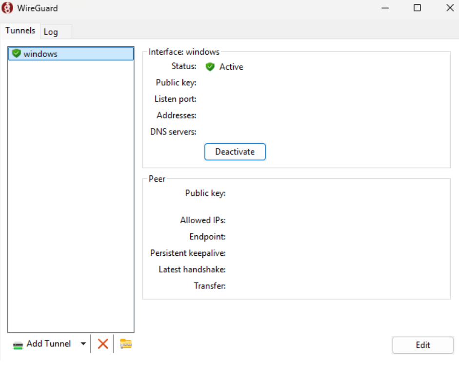

In the current context of digital connectivity, online security and privacy have become priorities. With this, Virtual Private Networks (VPNs) play a crucial role, offering an effective solution to protect data and maintain anonymity. Furthermore, with the increase of data collection by governments, companies, and advertisers, the use of VPNs becomes essential to protect user privacy by masking the IP address and encrypting data traffic, preventing online activities from being tracked, reinforcing anonymity and making user identification difficult.
Concepts
VPN
A VPN (Virtual Private Network) is a technology that creates a secure and encrypted connection
between the user's device and a remote server operated by the VPN provider. From a technical
perspective, the VPN encapsulates data packets using protocols such as OpenVPN, WireGuard, IPsec, or
L2TP, protecting them with end-to-end encryption. This encapsulation hides the packet content and
metadata, such as source and destination IP addresses, from interceptors or internet service providers
(ISPs). Additionally, by routing traffic through the VPN server, the user's actual location is masked,
displaying the remote server's IP address. This process amplifies privacy, protects against
man-in-the-middle (MITM) attacks, and allows access to geographically restricted content. The
reliability of a VPN depends on the provider's logging policy, the complexity of the applied encryption,
and the robustness of the protocol used.

VPN Protocols
VPN protocols are sets of rules that define how data is securely transmitted between the user's
device and the VPN server. These protocols specify encapsulation, authentication, and encryption methods
to protect data. For example, OpenVPN uses TLS for initial authentication and OpenSSL-based encryption,
allowing flexibility and high security. IPsec (Internet Protocol Security) operates at the network level
and uses Transport and Tunnel modes to protect IP packets, with support for AES encryption and HMAC
authentication. WireGuard, a more recent protocol, is designed for simplicity and performance, employing
modern algorithms like ChaCha20 for encryption and Poly1305 for authentication. Other protocols, such as
L2TP/IPsec, combine simple encapsulation with IPsec security, while SSTP uses the TLS protocol over TCP,
making it effective in restrictive networks. Each protocol has specific security, speed, and
compatibility characteristics, chosen based on user or network needs.
Proxy vs VPN
The main difference between proxy and VPN lies in the level of security, encryption, and protection
coverage. A proxy acts as an intermediary between the user's device and the internet, redirecting
requests to mask the client's IP address. Technically, it operates at the application level (e.g.,
browsers) and does not offer standard encryption, being limited to hiding the data origin. A VPN, on the
other hand, creates an encrypted tunnel between the user's device and a remote server, protecting not
only the IP but all network traffic from the device, regardless of the application used. In summary,
while a proxy is ideal for masking IPs in specific tasks, a VPN offers a more robust solution for
security and anonymity across the entire connection.
No-Logs Policy
The No-Logs Policy is a technical commitment adopted by some VPN providers to not record or store
information related to user activities or connections. This policy implies that the provider configures
their servers to operate ephemerally, using systems that avoid recording metadata such as IP addresses,
timestamps, bandwidth used, or websites visited. Therefore, this configuration may include the use of
RAM-only servers (volatile memory), which automatically erase all information when restarted, and the
adoption of communication protocols that minimize the need for log storage. Effective implementation
depends on independent audits to ensure that the provider does not collect data surreptitiously, and on
server locations in privacy-friendly jurisdictions where local legislation does not require data
retention. This approach is crucial to ensure anonymity and protection against surveillance or legal
requests for user information.
Kill Switch and DNS Leak
Kill Switch and DNS Leak Protection are technical features implemented in VPNs to ensure user
security and privacy. The Kill Switch works by constantly monitoring the connection to the VPN server.
If the connection is interrupted, it immediately blocks the device's network traffic to prevent data
from being sent without the encrypted tunnel protection, protecting the real IP and other sensitive
information. On the other hand, DNS Leak Protection prevents domain name resolution (DNS) requests from
escaping the VPN tunnel and being sent directly to the internet service provider (ISP). Without this
protection, even with the VPN active, the ISP could record the websites visited by the user. This
feature redirects all DNS queries to servers managed by the VPN, encapsulating them in the encrypted
tunnel. Both mechanisms work together to prevent failures that compromise user anonymity and privacy
during VPN use.
Hands-on
VPS
Choosing a VPS (Virtual Private Server) for VPN creation is crucial, as its location directly
influences latency, connection speed, and the geographic location of the user's connection.
Choosing the VPN Protocol
When choosing a VPN protocol, it is essential to consider security, performance, and ease of
implementation. WireGuard has stood out as a modern and efficient choice, offering a simplified
architecture based on state-of-the-art cryptography, such as ChaCha20 and Poly1305. Unlike more
traditional alternatives like OpenVPN and IPSec, WireGuard is lighter, providing fast and stable
connections even on devices with limited resources. Additionally, its lean codebase reduces the attack
surface and facilitates security audits, making it ideal for those seeking anonymity and data protection
with high performance. Therefore, the software application and protocol chosen was WireGuard.
*It is worth noting that only the VPN server can decrypt the data, ensuring that no one in between
(such as internet providers, hackers, or government agencies) can read the information.
Preparations for VPN Setup
After choosing a VPS provider, such as Digital Ocean, Vultr, or Linode, and creating your instance,
and accessing it, update the operating system.
apt update && apt upgrade -y
Then, install WireGuard and its dependencies.
apt install wireguard wireguard-tools -y
Before configuring the VPN, first, you need to enable IP forwarding so that the server forwards traffic between the WireGuard interface and the internet.
vim /etc/sysctl.conf
Uncomment the line "#net.ipv4.ip_forward=1"
Then, apply the change
sudo sysctl -p
Now, ensure the WireGuard kernel module is loaded:
lsmod | grep wireguard
If the command has no return, load the module.
sudo modprobe wireguard
Configuring WireGuard on the Server
In the WireGuard folder, which corresponds to /etc/wireguard, generate the public and private
keys.
wg genkey | tee privatekey | wg pubkey > publickey
Then, create the WireGuard interface by defining the wg0.conf file.
sudo vim /etc/wireguard/wg0.conf
[Interface]
PrivateKey = "privatekey file content"
Address = 10.10.10.1/24 # Server's internal IP address on the VPN network
ListenPort = 51820 # WireGuard default port
# SaveConfig = true # Optional: to save configuration changes
PostUp = iptables -A FORWARD -i %i -j ACCEPT; iptables -t nat -A POSTROUTING -o "main_network_interface" -j MASQUERADE
PostDown = iptables -D FORWARD -i %i -j ACCEPT; iptables -t nat -D POSTROUTING -o "main_network_interface" -j MASQUERADE
Then, enable WireGuard.
sudo systemctl enable wg-quick@wg0
sudo systemctl start wg-quick@wg0
Finally, check the status. If the wg0 interface appears active, the process was successful.
sudo wg show wg0
Configuring the WireGuard Client
On the device that will be the VPN client, open the terminal and generate the client keys.
wg genkey | tee privatekey | wg pubkey > publickey
Then, still on the client device, create a "client.conf" file and add the content:
[Interface]
PrivateKey = "client's privatekey file content"
Address = 10.10.10.2/24 # Unique IP for each client
DNS = 8.8.8.8, 8.8.4.4 # Optional: DNS Servers
[Peer]
PublicKey = "server's publickey file content"
AllowedIPs = 0.0.0.0/0 # Route everything through VPN
Endpoint = "server_public_ip":"server_port" # Server IP and port
PersistentKeepalive = 25 # Sends a packet every 25 seconds
Back on the server, edit the WireGuard interface file again to add the [peer] section for the new client.
vim /etc/wireguard/wg0.conf
[Peer]
PublicKey = "client's publickey file content"
AllowedIPs = 10.10.10.2/32 # Client's individual IP
Finally, to apply the new WireGuard interface update, restart the WireGuard service.
sudo systemctl restart wg-quick@wg0
Usage
In a Linux environment, simply use the command "wg-quick up client.conf"
In a Windows environment, download the WireGuard application from https://www.wireguard.com/install/. Then, click on
"Add Tunnel" and select the "client.conf" file
Therefore, automatically, the VPN will be connected. 
For validation purposes, access the sites https://ipaddress.my/ and
https://dnsleaktest.com. Both sites should return the VPS's public
IP, thus creating a VPN.

Finally, it is worth noting the importance of configuring an appropriate firewall for the VPS environment, thus protecting against unauthorized access. Additionally, keep private keys in a secure environment.
Process Automation
In order to automate the entire process mentioned, from both the server and client perspective,
WG-Auto was created, a tool that performs WireGuard installation and configuration. It can be
accessed through https://github.com/brennocm/wg-auto,
which includes the installation process, as well as a video that exemplifies its usage.
* It is worth noting that the tool was designed for clients with Debian-based environments.